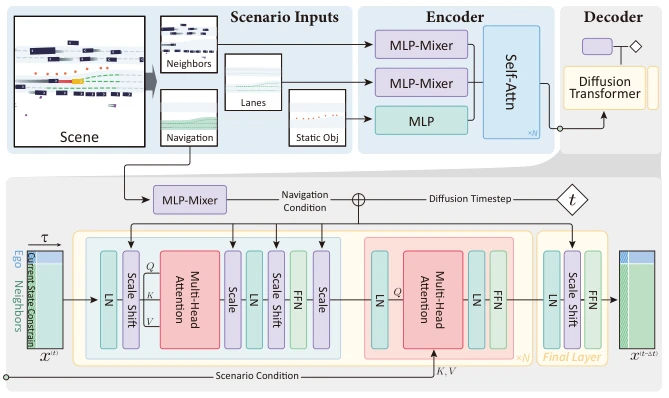
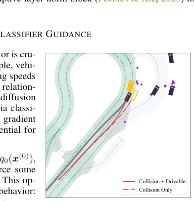
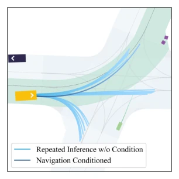
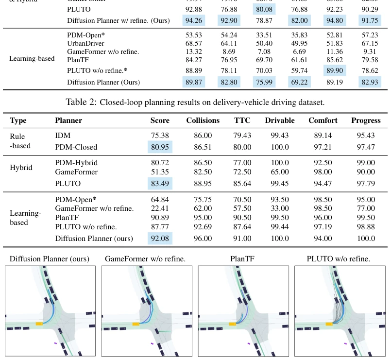
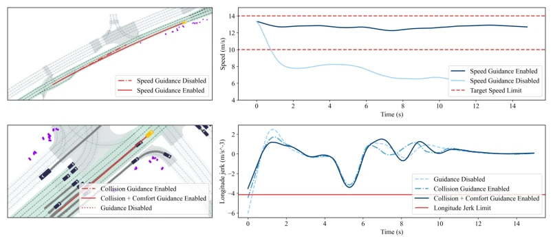
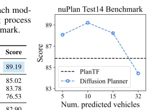
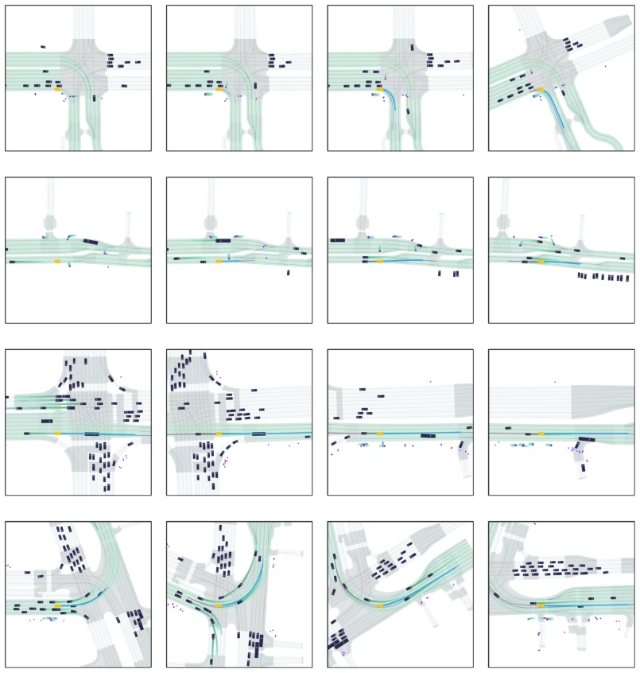
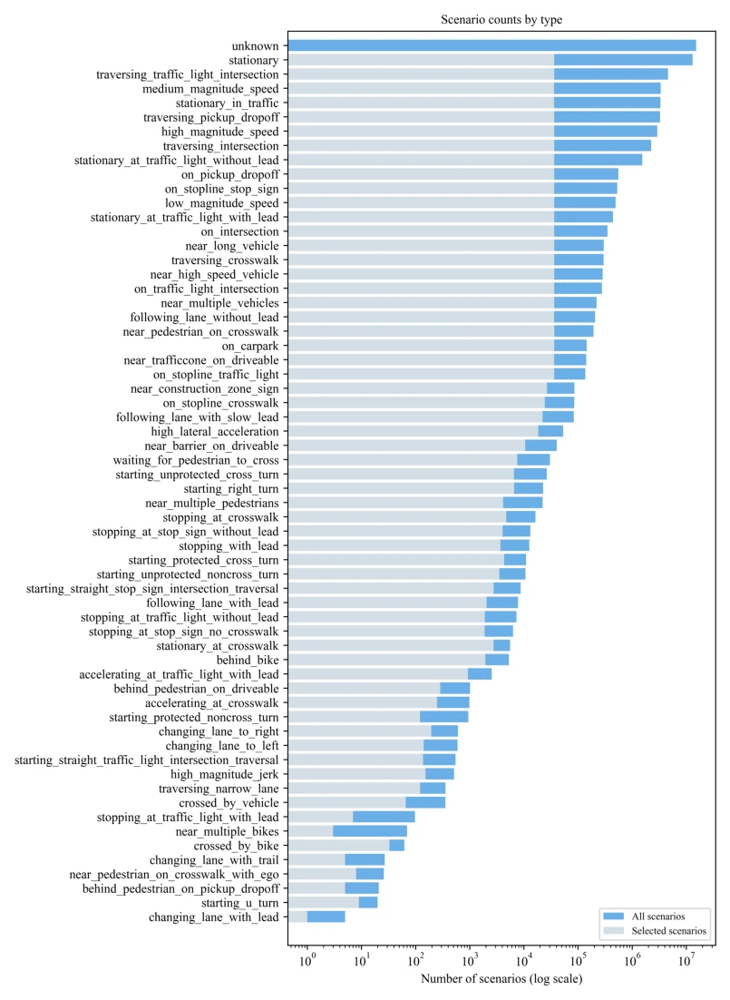
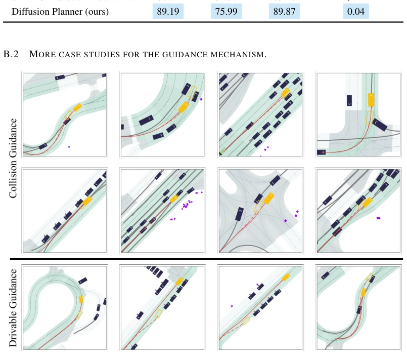
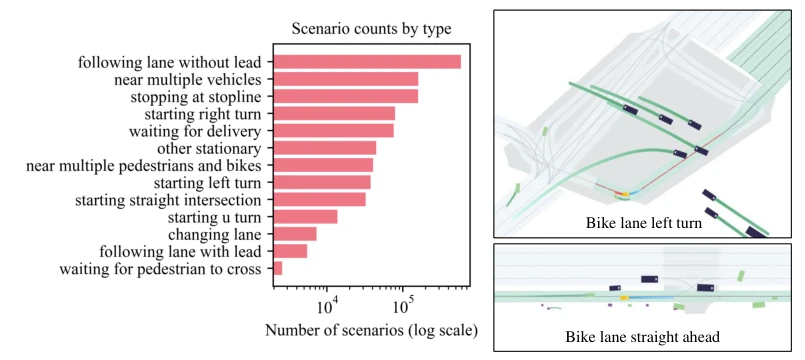

这篇论文把扩散模型硬塞进自动驾驶规划里，试图用生成式 AI 解决传统模仿学习的多模态拟合难题。亮点确实够硬，nuPlan 上直接跑赢了不少纯学习基线，甚至逼近规则方法，不用后处理就能出好轨迹，这点值得点赞。不过，作者嘴上说着“无需规则优化”，结果表格里加了 refine 模块才真正碾压人类专家，这操作有点“既要又要”。另外，分类器引导虽然灵活，但依赖可微能量函数，遇到不可微的复杂规则（比如某些交通法规）可能就得歇菜。总的来说，是 Diffusion Policy 在规划领域的成功落地，但别指望它能解决所有长尾问题，毕竟扩散采样速度还是硬伤。
This paper forcibly integrates diffusion models into autonomous driving planning, attempting to use generative AI to solve the multi-modal fitting challenges of traditional imitation learning. The highlights are indeed impressive; it directly outperforms many pure learning baselines on nuPlan, even approaching rule-based methods, producing good trajectories without post-processing, which deserves praise. However, while the authors claim "no rule optimization required", the table shows that adding a refine module is needed to truly outperform human experts; this operation is a bit "wanting to have it both ways". Additionally, although classifier guidance is flexible, it relies on differentiable energy functions; encountering non-differentiable complex rules (such as certain traffic regulations) may cause it to fail. Overall, it is a successful implementation of Diffusion Policy in the planning field, but do not expect it to solve all long-tail problems, after all, diffusion sampling speed remains a significant drawback.
研究动机Motivation
自动驾驶规划的核心痛点在于如何平衡多模态行为拟合与安全性。现有模仿学习方法（如 Behavior Cloning）难以捕捉人类驾驶的多模态分布，导致闭环规划误差累积 (Nayakanti et al., 2023)。而规则方法（Rule-based）虽安全但泛化差，修改规则工程量大 (Hawke et al., 2020)。当前基于学习的方法常依赖规则后处理来过滤轨迹，违背了端到端初衷 (Vitelli et al., 2022)。此外，IL 难以通过辅助损失平衡多目标冲突 (Bansal et al., 2018)。Diffusion 模型强大的分布建模能力和灵活引导机制（Classifier Guidance）为解决这些问题提供了新路径，旨在无需规则微调下实现高质量闭环规划。
The core pain point of autonomous driving planning lies in how to balance multi-modal behavior fitting and safety. Existing imitation learning methods (such as Behavior Cloning) struggle to capture the multi-modal distribution of human driving, leading to closed-loop planning error accumulation (Nayakanti et al., 2023). While rule-based methods are safe, they have poor generalization, and modifying rules requires significant engineering effort (Hawke et al., 2020). Current learning-based methods often rely on rule-based post-processing to filter trajectories, violating the original intention of end-to-end (Vitelli et al., 2022). Additionally, IL struggles to balance multi-objective conflicts through auxiliary losses (Bansal et al., 2018). Diffusion models' powerful distribution modeling capabilities and flexible guidance mechanisms (Classifier Guidance) provide a new path to solve these problems, aiming to achieve high-quality closed-loop planning without rule fine-tuning.
The overall framework is based on Diffusion Transformer (DiT), redefining the planning task as future trajectory generation. Inputs include current state, historical trajectories, lanes, and navigation information. The core innovation lies in joint modeling: simultaneously generating future trajectories for the ego vehicle and M surrounding vehicles, utilizing Multi-Head Attention to fuse interaction information, avoiding the fragmentation of separate prediction sub-modules. For lane and neighbor information, MLP-Mixer is used to extract dense features; navigation information guides generation through adaptive layer normalization. The training objective is diffusion loss to recover the data distribution. In the inference stage, Classifier Guidance is introduced; the sampling process is adjusted via gradients of differentiable energy functions (such as collision distance, comfort, speed deviation) to achieve behavior alignment (such as obstacle avoidance, comfort) without retraining. Data preprocessing includes ego-centric transformation and z-score normalization; inference uses DPM-Solver to accelerate sampling, achieving a 10Hz planning frequency.

Figure 1: Model architecture of Diffusion Planner.

Figure 2: Starting from the same posi- tion, the trajectories driven under different guidance settings.

Figure 5: Multi-modal planning behavior of Diffusion Planner.
Tested on the nuPlan benchmark and a self-built 200-hour delivery vehicle dataset. Baselines cover rule-based (IDM, PDM), learning-based (PlanTF, PLUTO, GameFormer), and hybrid methods. Evaluation metrics include closed-loop score, collision rate, TTC, etc. Results show that Diffusion Planner surpasses all learning baselines on nuPlan Test14-hard, approaching rule-based methods; after adding the refine module, it even surpasses human experts. It demonstrated strong transferability on the delivery vehicle dataset, while PDM and other nuPlan-specialized models showed performance degradation. Ablation studies indicate that current state information, data augmentation, and z-score normalization are crucial for performance. Guidance mechanism experiments verified the flexible adjustment capability of speed control and comfort, without requiring additional training.

Figure 3: Future trajectory generation visualization. A frame from a challenging narrow road turning scenario in the closed-loop test, including the future planning of the ego vehicle (PlanTF and PLUTO w/o refine. show- ing multiple candidate trajectories), predictions for neighboring vehicles, and the ground truth ego trajectory.

Figure 4: Target speed and comfort guidance: For target speed guidance, the speed changes before and after guidance are visualized. For comfort guidance, the longitudinal jerk changes are compared before and after applying comfort guidance on top of collision avoidance guidance.

Figure 6: Ablation on the num- ber of predicted vehicles M. Figure 7: Inference param grid search.

Figure 8: Closed-loop planning results: each row represents a scenario at 0, 5, 10, and 15 seconds intervals. Each frame includes the future planning of the ego vehicle, predictions for neighboring vehicles, the ground truth ego trajectory, and the driving history of the ego vehicle.

Figure 11: Scenario count by type in the nuPlan dataset.
其他图片Other Figures

Figure 9: Case studies for collision and drivable guidance. Starting from the same position, we visualized the closed-loop test results: the dashed line represents the results without guidance, with hollow car markers indicating locations where safety incidents occurred. The solid line represents the results with guidance, and the solid car markers indicate the final positions.

Figure 10: Scenario count by type in the delivery-vehicle driving dataset, with representative visualizations.